Sonora es una tierra diversa de clima árido y seco que cubre la mayor parte del estado, al este se encuentra la Sierra Madre Occidental que alcanza elevaciones superiores a 3,000 metros (10,000 pies). Al norte está el desierto de Sonora que contiene las dunas de arena del Gran Desierto de Altar en el noroeste. Al sur, la tierra se transforma en un bosque seco subtropical y al oeste está el mar de Cortés. Durante miles de años, este ha sido hogar de diversas culturas indígenas que viven en muchas sociedades diferentes, desde cazadores-recolectores hasta agricultores. El contacto con los españoles llegó en la década de 1530, en 1533 las fuerzas españolas se retiraron después de una batalla con la feroz cultura yaqui, sin embargo, esta será una de muchas historias que contar sobre los pueblos indígenas. Para el siglo XVII, la misión llegó a Sonora, se fundó la plata y se estableció la ciudad de Alamos. En 1700 se fundó la ciudad de Hermosillo, donde inicialmente se conocía como Pitic. Más tarde, el pueblo sería renombrado a Hermosillo en honor al líder de la independencia mexicana José María González de Hermosillo. En el siglo XIX, Sonora se transformaría con la revolución industrial, pero transformar a México vino a expensas del pueblo mexicano, ya que la dura administración del presidente Porfirio Díaz llevó a una revolución que estalló primero en Cananea, Sonora, uniendo al país. Esto resultó en el exilio de Díaz y en el inicio de la Revolución Mexicana. Después de la Revolución Mexicana, Sonora produjo cuatro presidentes mexicanos. La cultura de Sonora también se sintió en el cine mexicano, ya que varios actores se convirtieron en celebridades. Sonora ahora se ha convertido en un estado de gran potencial, con diversos recursos ricos y hogar de hermosas playas y deliciosa gastronomía, haciendo de Sonora un destino turístico.
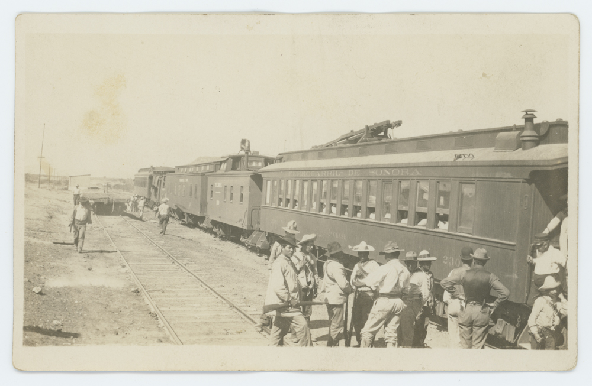
1878-1882
El Ferrocarril de Sonora construye la primera línea ferroviaria en Sonora de Nogales a Guaymas
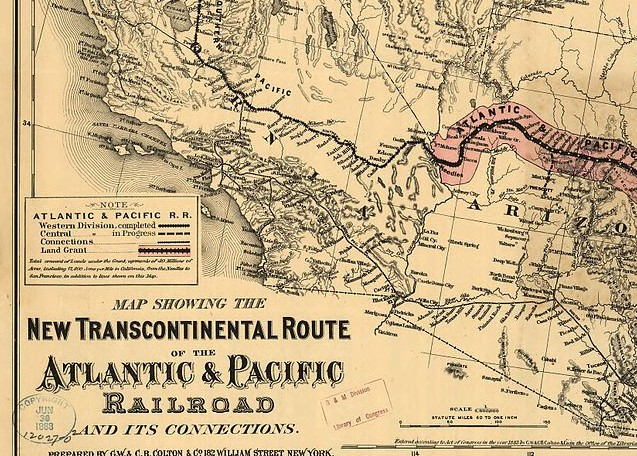
1898
La ATSF intercambia la línea de Sonora Railway por la línea Southern Pacific California Mojave. El Sonora Railway está arrendado por Southern Pacific Railroad.
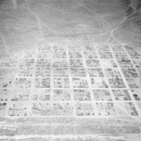
1899
La Compañía Phelps Dodge incorpora al Ferrocarril de Narcozari una línea de Agua Prieta a Narcozari
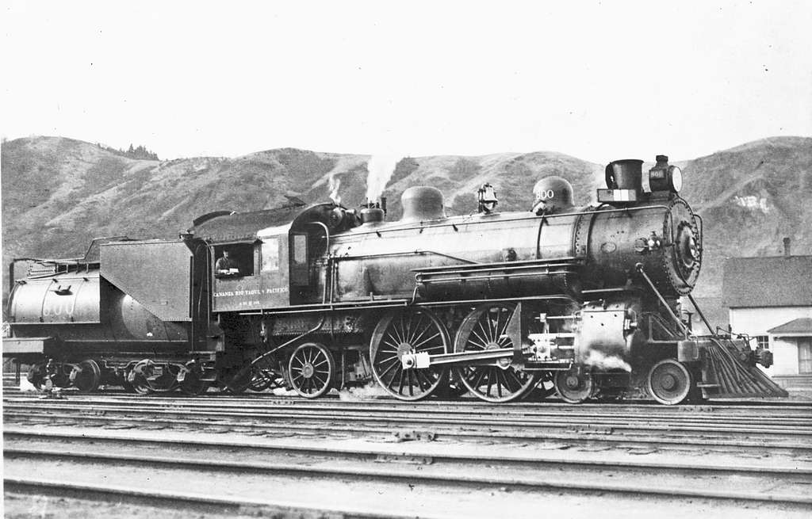
1902
La Cananea Consolidated Copper Company (Cananea) incorpora el Ferrocarril Río Yaqui y Pacífico. Southern Pacific pronto asume el control y construye una línea de Naco a Cananea.
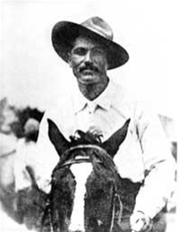
1907
El guardafrenos Jesús García salva el pueblo de Narcozari mientras un tren cargado de TNT para minería se incendia. García se apresuró a poner su tren en reserva a toda velocidad cuesta abajo a las afueras del pueblo, donde ocurrió una gran explosión que mató a Jesús García, salvando así el pueblo de Narcozari.
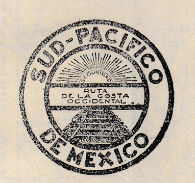
1909
El Pacífico Sur crea el Sud Pacífico de México.
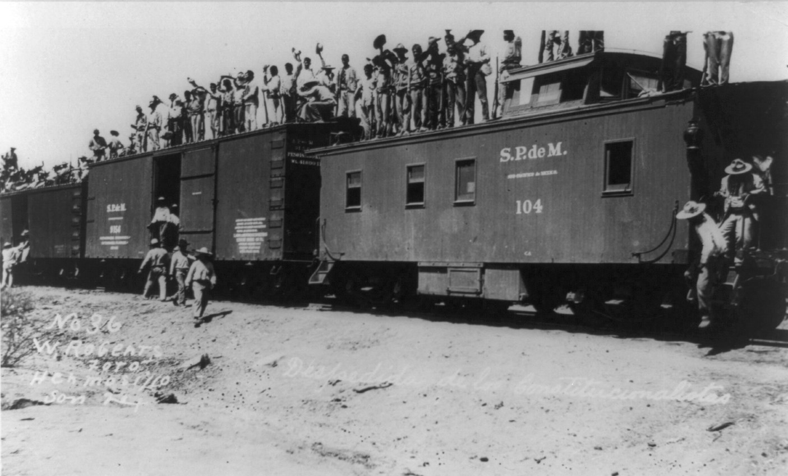
1910-1920
La Revolución Mexicana estalla en México y retrasa el avance del SPdeM para llegar a Guadalajara
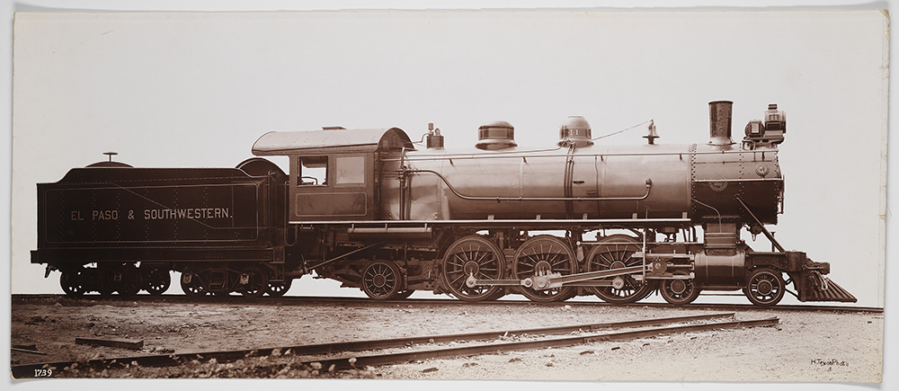
1924
El SP compra el Ferrocarril El Paso & Southwestern que también incluía el ferrocarril Narcozari.
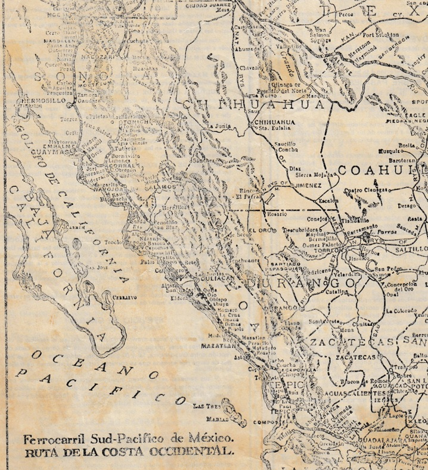
1927
El SPdeM llega a Guadalajara
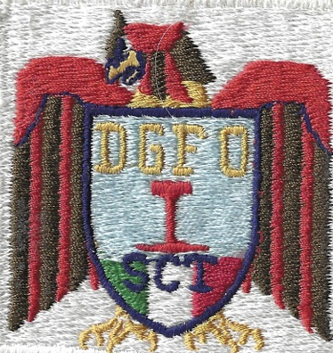
1937-1947
El Ferrocarril Sonora-Baja California es creado por el Gobierno Mexicano para conectar Mexicali, Baja California con Sonora, obra se retrasó debido a la Segunda Guerra Mundial, el SBC conecta la línea SPdeM en Benjamin Hill.
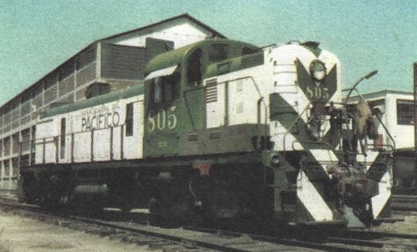
1951
El SP vende al Gobierno mexicano en diciembre, se crea el Ferrocarril del Pacífico
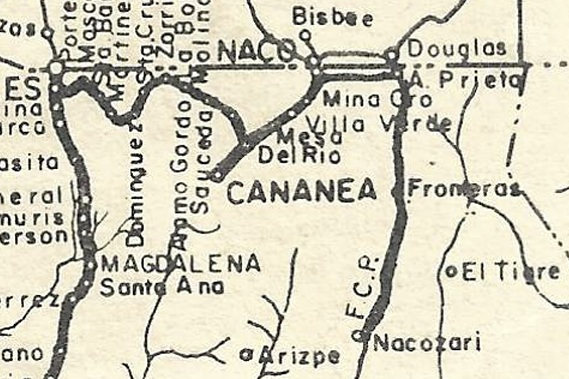
1965-1967
La SP vende el Ferrocarril Narcozari al Gobierno Mexicano pasando a formar parte del sistema FCP, se construye una Línea desde Naco para llegar a Agua Prieta
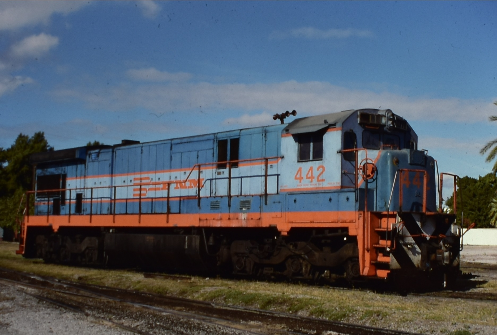
1987
Todos los Ferrocarriles de México pasan a formar parte del sistema FNM SBC y FCP pasan a formar parte de la región Pacífico
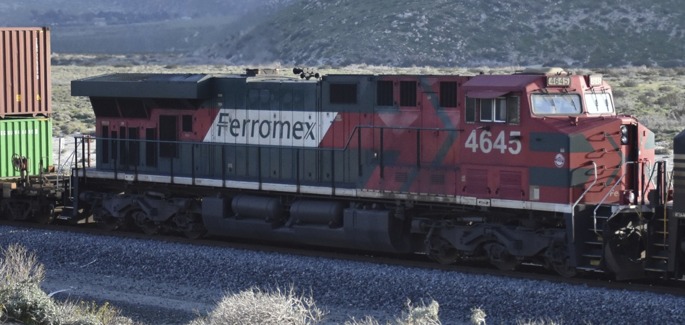
1994-1998
Los ferrocarriles de México se privatizan. Los activos de SBC y FCP se venden a Ferromex.